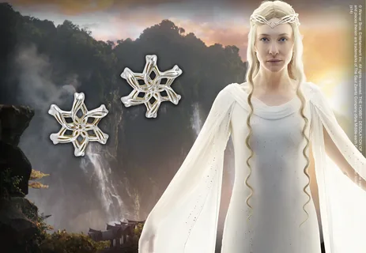
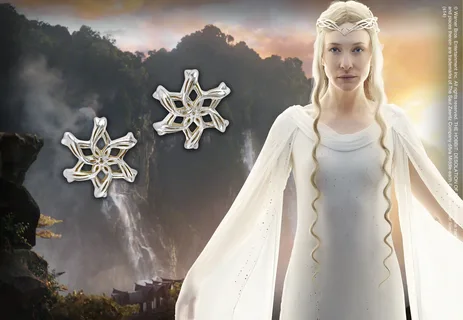
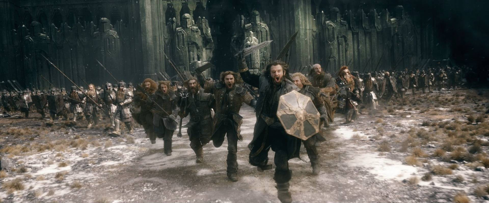
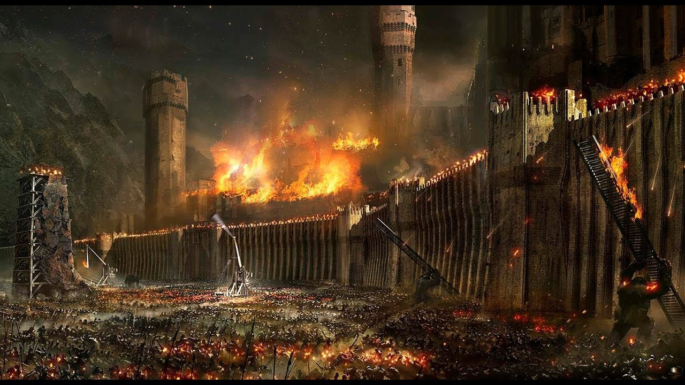
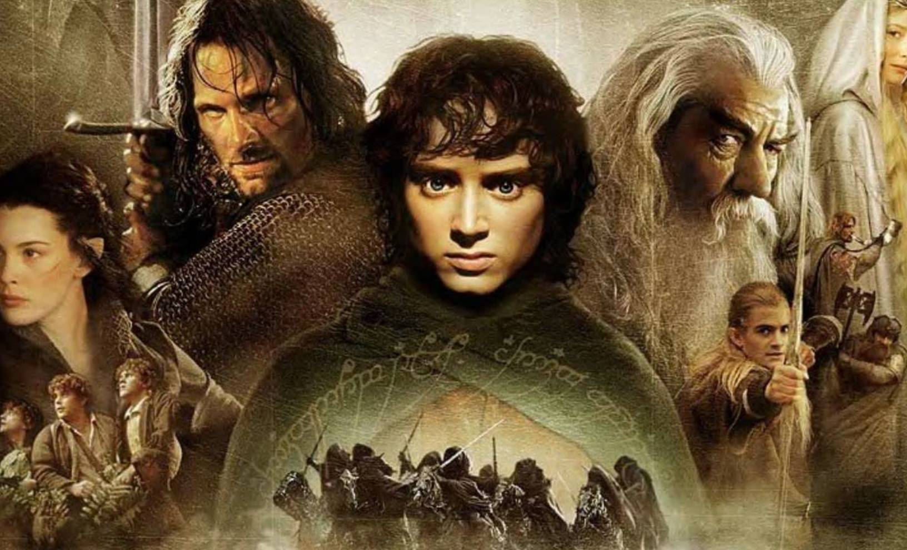

Трилогия «Властелин Колец» бесспорно возглавляет список «культовых» книг XX века. Ее автор, Дж.Р.Р.Толкин, профессор Оксфордского университета, специалист по древнему и средневековому английскому языку, создал удивительный мир - Среднеземье, который вот уже без малого пятьдесят лет неодолимо влечет к себе миллионы читателей. Там, в Среднеземье, в стране, управляемой советом волшебников, где в серебряных лесах поют эльфы, в глубоких пещерах добывают драгоценный мифрил гномы, а бескорыстие добрых чародеев постоянно подвергается испытаниям.Среднеземье, который вот уже без малого пятьдесят лет неодолимо влечет к себе миллионы читателей.
Глава 1 Минас Тирит
 

Пиппин выглянул из-под плаща Гэндальфа. Он никак не мог понять, во сне или наяву свистит в ушах черный ночной ветер, медленно плывет зубчатая тень гор далеко справа, во сне или наяву качается у него над головой звездное небо. Он пытался вспомнить, что с ним и где он, но мысли путались, отдельные картины сменяли друг друга. Помнится, они мчались без остановок, летели все вперед и вперед, и там, впереди, вставал на рассвете золотистый мягкий блеск, и был город, затопленный тишиной, и гулкая пустота большого дворца на холме. Они ворвались под его своды в тот самый момент, когда вверху пронеслась огромная крылатая тень, и ужас выбелил лица людей вокруг. Пиппин вспомнил, как и его сердце сжала ледяная рука. Но рядом был Гэндальф, и ужас ушел, осталась только усталость. Пиппин спал, но сон был тревожным, в нем ходили и разговаривали незнакомые люди, что-то приказывал Гэндальф. И дальше, без перехода, снова бешеная скачка сквозь ночь. С тех пор как он заглянул в Палантир, прошло двое, нет, трое суток. Палантир! Это было ужасно! С этим воспоминанием он проснулся окончательно. Вокруг шумел и бормотал все тот же ветер.
Заметка 1
Яркий желтый огонь в темном небе заставил Пиппина съежиться от страха. Зачем Гэндальф везет его в это страшное, там, впереди? Он протер глаза. На востоке всходила луна. Значит, они будут скакать и скакать, мчаться сквозь ночь бесконечно долго. – Где мы, Гэндальф? – На землях Гондора. Это - Анориен. Пиппин притих, но тут же прижался к магу. – Что там? Смотри! Красный огонь! Как драконий глаз. А вон ещеодин! Гэндальф только крикнул коню: – Вперед, Сполох, вперед! Спеши, друг! - и, наклонившись кПиппину, сказал: - Смотри. Это зовут на помощь огни Гондора.Война началась. Вот огонь на Амон Дине, пламя на Эленахе, идальше огни, Нардол, Эрелас, Мин Риммон, Каленхад и Халифириену границ Рохана. Вперед, Сполох!
Глава 2 Выбор Арагорна

Когдастих топот копыт Сполоха, уносящего Гэндальфа и Пиппина, Мерривернулся к Арагорну. Сумку свою он потерял еще в Порт Галене,собирать было нечего - так, кое-какие полезные мелочи сразвалин Изенгарда. Леголас и Гимли ожидали только сигналатронуться в путь. – Нас осталось четверо, - сказал Арагорн. - Мы будевместе, но пойдем не одни. После этого крылатого ужаскороль решил выступать немедля и возвращаться к холмам поприкрытием ночи. – А потом куда? - спросил Леголас. – Еще не знаю. Правитель отдал приказ войскам собраться Эдорасе на четвертую ночь после этой. Там, я думаю, егждут вести о войне, и Всадники Рохана двинутся к МинаТириту. Но у меня другая дорога. – Я с тобой, - тут же сказал Леголас. – И я тоже, - отозвался Гимли. – Мой путь еще темен для меня, - задумчиво ответиАрагорн. - Кажется, наступает час, к которому я готовилсвсю жизнь. Нам тоже нужно попасть в Минас Тирит, но какипутем мы придем туда, я еще не решил.
Заметка 2
хотя их Правитель обещал, что мы поговорим с ним о Шире после возвращения. – Мне видится, что ты должен идти с ним, Мерри, - сказаАрагорн. - И не рассчитывай на весёлую прогулку! Теодендолго еще не сидеть в покое Золотых Палат. Немало надежиссякнет этой горькой весной! Они отправились затемно. Теоден, с ним двадцать двВсадника, Леголас с Гимли и Арагорн с Мерри. Ужпереправившись через Изен, они услышали за спиной топотИх нагнал Всадник из арьергарда.
Глава 3 Рохан собирает войска
Отныне все дороги вели на восток, навстречу Тьме. В тот самый час, когда Пиппин, стоя пред воротами Города, смотрел на входящие войска, король Рохана во главе большого отряда Всадников спускался с гор. Вечерело. Длинные тени, перегоняя лошадей, бежали впереди подолине. На лесистых склонах было уже темно. После дня путикороль ехал медленно. Тропа, огибая огромный скальный уступ,нырнула под своды тихо шепчущих елей. Все ниже и нижеспускался отряд в долину. Блеск водопадов приглушали сумерки. Весь этот день воины спускались вниз вдоль ручья; теперьвместе с ними он устремился в широкую долину, поглотилнебольшой приток и, взбивая пену, помчался по камням кЭдорасу. В верховьях долины, словно запирая ее, высилсямогучий горный пик с вершиной, укрытой вечными снегами. Навосточных его склонах густо голубели тени, западные склоныпылали в огне заката. Мерри с изумлением озирался по сторонам. Ему было интересно внезнакомой стране. Это был край без неба; в туманной дымкеглаз различал только горы, каменная стена вставала за стеной,меж ними разверзались пропасти, заполненные туманом. Отмогучих водопадов воздух тихо звенел, шумели деревья, стучалипо камням копыта. Раньше Мерри любил слушать о горах, думать оних, но теперь, когда горные хребты вздымались вокруг подсамые небеса, он чувствовал себя неуютно, живо ощущаяисполинскую тяжесть, гнетущую грудь Среднеземья. Слишком онибыли большие; глядя на них, хотелось оказаться в маленькойкомнатке возле камина
Заметка 3
Они отправились затемно. Теоден, с ним двадцать два Всадника, Леголас с Гимли и Арагорн с Мерри. Уже переправившись через Изен, они услышали за спиной топот. Их нагнал Всадник из арьергарда.Кажется, наступает час, к которому я готовился всю жизнь. Нам тоже нужно попасть в Минас Тирит, но каким путем мы придем туда, я еще не решил.
Глава 4 Осада Города
Гэндальф разбудил Пиппина. За окнами по-прежнему было темно, в комнате горели свечи. Духота стояла, как перед грозой. – Который час? - спросил Пиппин, зевая. – Начало третьего, - ответил маг. - Одевайся, тебя призываетПравитель. Надеюсь, ты не забыл, что служишь ему? – А он даст нам позавтракать? – Нет. Завтрак готов, - Гэндальф кивнул на стол, - и до обедабольше ничего не будет. В Городе экономят провизию. Пиппин угрюмо разглядывал небольшую краюху хлеба, оченьмаленькую (на его взгляд) порцию масла и чашку молока. – И зачем ты меня привез сюда? - проворчал он. – Чтобы помешать тебе делать глупости, - в тон ему ответилмаг. - Если тебе здесь не по нраву, то, кроме себя, винитьнекого. Пиппин насупился и замолчал.
Заметка 4
Когда Гэндальф снова привел его в зал состатуями и колоннами, Денетор сидел на том же самом месте.«Как старый, терпеливый паук, - подумалось Пиппину. - Он что,так со вчера и сидит тут?» Правитель предложил Гэндальфусесть, не обращая внимания на стоящего Пиппина, но потом живообернулся к хоббиту. – Ну, добрый мой Перегрин, надеюсь, ты провел вчерашний деньспользой и приятством. Вот только угощение моглопоказатьсятебе скудноватым. Но - война. - Он слегка развелруками. Пиппин покраснел. Ему показалось, что Правителю известнынетолько его слова, но и мысли. – Что же ты намереваешься делать у меня на службе? -спросилДенетор. – Я думаю, что повелитель укажет мои обязанности. – Укажу. Когда узнаю, что ты можешь. А для этого лучшевсегооставить тебя при себе. Будешь выполнять мои поручениябеседовать со мной, когда будет время. Петь умеешь?
Глава 5 Поход Теодена
Мерри лежал, завернувшись в одеяло, и тщетно вглядывался в темноту. Ночь была тихой, безветренной, только деревья чуть слышно вздыхали вокруг. Он поднял голову и снова услышал настороживший его звук. Где-то вдали глухо били барабаны. Замолкая в одном месте, удары тут же возникали, в другом. Интересно, слышат ли их часовые? Невидимые в темноте, расположились на отдых войска рохирримов. Пахло лошадьми.Мерри слышал, как они пофыркивают и мягко переступают копытами по усыпаннойхвоей земле. На ночь Теоден остановился в глухом сосновом бору у подножиясигнального холма Эленах, поднимавшегося высоко над вершинами ДруаданскогоЛеса. От усталости Мерри не мог заснуть. Шли пятые сутки похода. Мрак, становившийсявсе плотнее, приводил воинов в уныние. Мерри уже не понимал, зачем так рвалсяв этот поход, ведь ясный приказ короля позволял ему остаться. Хоббит уже нераз принимался гадать, знает ли король о его самоуправстве. А если знает, точто думает? Наверное, Дернхельм как-то договорился с Эльфхельмом, командиромих «йореда» (так Всадники называли отряды). Во всяком случае, воины старалисьне замечать лишнего новобранца. С ним никто не заговаривал, а если смотрели,то как на лишнюю переметную суму за спиной Дернхельма. Да и сам молодойВсадник за всю дорогу не проронил ни слова.
Заметка 5
Тут поневоле начнешь ощущать себя никому не нужной обузой. Войска Теодена все ближе подходили к опасным местам. До внешних укреплений Минас Тирита оставалось меньше дня пути. Разведчики, которым удалось ернуться, доложили, что дорога впереди захвачена врагом. В трех миляхзападнее Амон Дина стоит целая орда, а большой отряд орков идет навстречу. Ониуже в трех-четырех лигах от Друаданского Леса.
Вернуться в начало